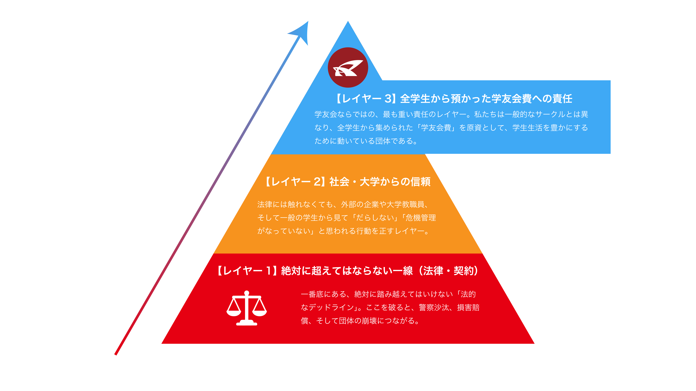

2026中央事務局研修
令和8年6月20日
誰か一人がスマホを紛失したり、パスワードを乗っ取られたりした瞬間に、団体全体のデータ（全メンバーの個人情報や協賛企業の連絡先など）がすべて流出してしまう。「誰がデータを消したか・書き換えたか」の犯人探しになり、仲間内の信頼関係も崩壊してしまう。
アカウントの使い回しは絶対に禁止。Google Workspace（組織用）を導入するか、個人のGoogleアカウントに対して、必要なフォルダだけを個別に権限共有する運用に変えよう。
「身内しか知らないリンクだから大丈夫」は一番危険！そのリンクがLINEグループから別の友達に転送されたり、SNSに誤って貼られたりした瞬間に、世界中の誰でも見られる状態になってしまう。
原則、共有相手の「メールアドレスを指定して追加」する。どうしても不特定多数に共有する場合は、中身が「流出しても全く問題ない公開情報だけ」であることを必ず確認する。
BeRealは「今」を撮るため油断しがちですが、背景への写り込みが超危険！後ろのホワイトボードに書かれた未公開のイベント企画、机の上の書類、パソコン画面に映った個人情報などが、意図せず世界中に発信されてしまう。
活動場所（オフィスやミーティング中）でのBeRealやストーリーの撮影を控えること。どうしても撮りたい場合、一度退室してから撮影する。
「誰にも言わないでね」は絶対に広まる。友達が「ここだけの話」として他の人に話し、それがSNSで拡散された場合、芸人さんの所属事務所との契約違反になり、違約金の発生や、最悪の場合ステージが中止になってしまう。学友会だけでなく大学の信用も失墜してしまう。
「公式発表前の情報は、家族や親友であっても絶対に言わない」を徹底する。情報解禁日を守ることは、外部と仕事をする上での最低限のプロルール。
お酒が入っている状態では、冷静な判断や正しい敬語が使えず、団体の信頼を失ってしまう。また、周りのガヤガヤした声や、こちらが話す内容（企業名や金額など）が居酒屋の他人に筒抜けになり、情報漏洩に繋がる。
飲み会中や騒がしい場所での仕事の電話は出ない。どうしても急ぎなら、一度静かな場所に移動し、お酒が入っているなら「今、出先ですので、明日◯時に折り返します」とだけ伝えて切る。
丸投げすること自体よりも、プロンプト（指示文）に「自団体の未公開データ」「メンバーの個人情報」「他団体・他社の機密情報」を入力してしまうことが危険。AIがそれを学習し、他人の画面に回答として出力されてしまう（情報漏洩する）リスクがある。
AIを使うのはOK（むしろ効率化として推奨）。ただし、入力していいのは「一般的な知識やアイデア出し」まで。具体的な団体名、個人名、未公開の数字などは絶対に打ち込まない。
ワーク5分間
終わったら2つのグループに発表してもらう（約2分）

ご質問があれば、中央事務局・グローバル化推進室へお問い合わせください
E-mail: ritsglobalpromo@gmail.com